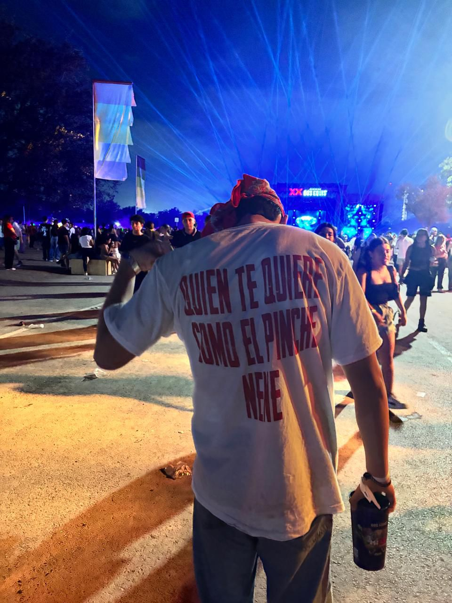
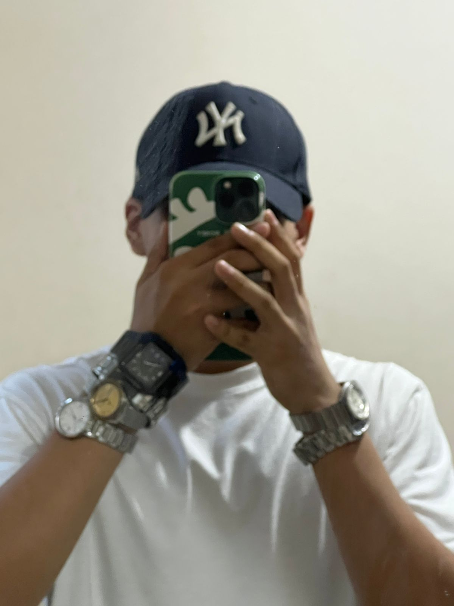
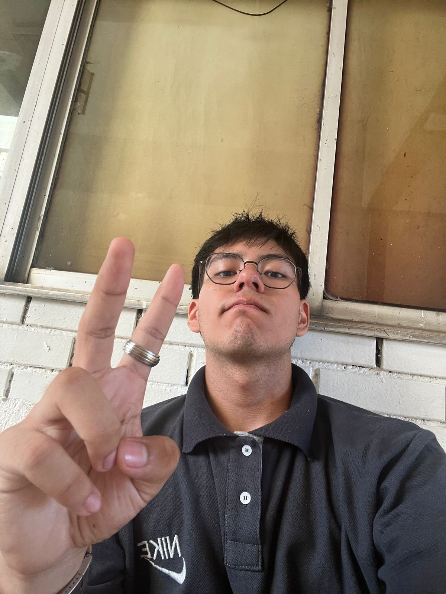
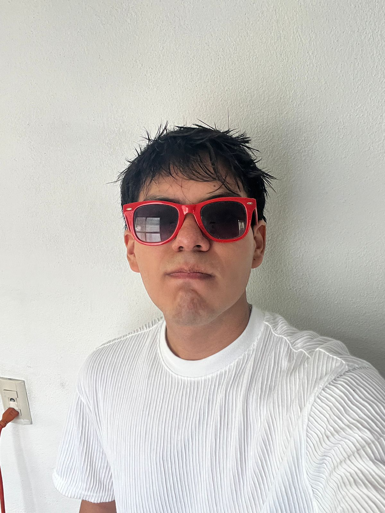
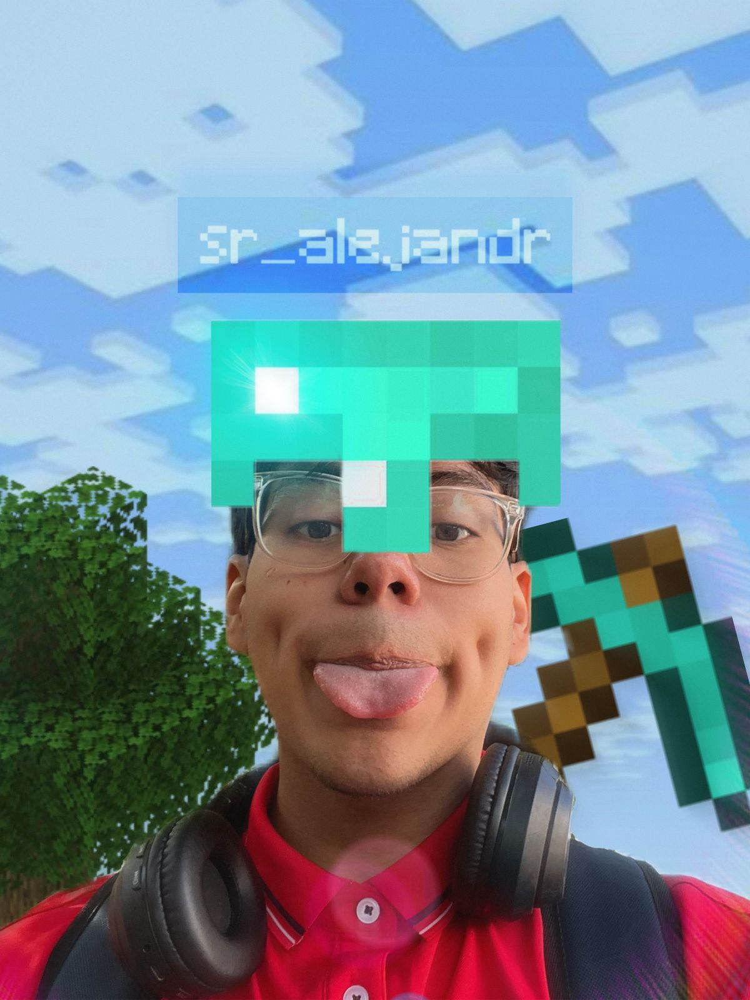
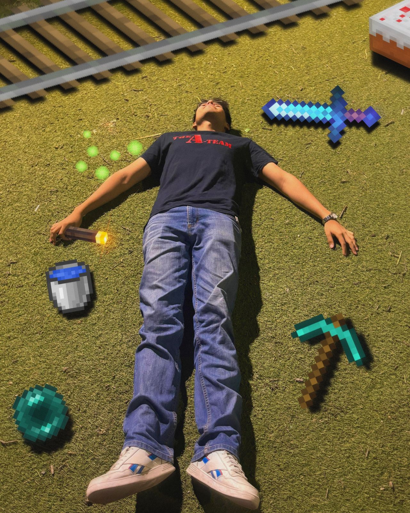
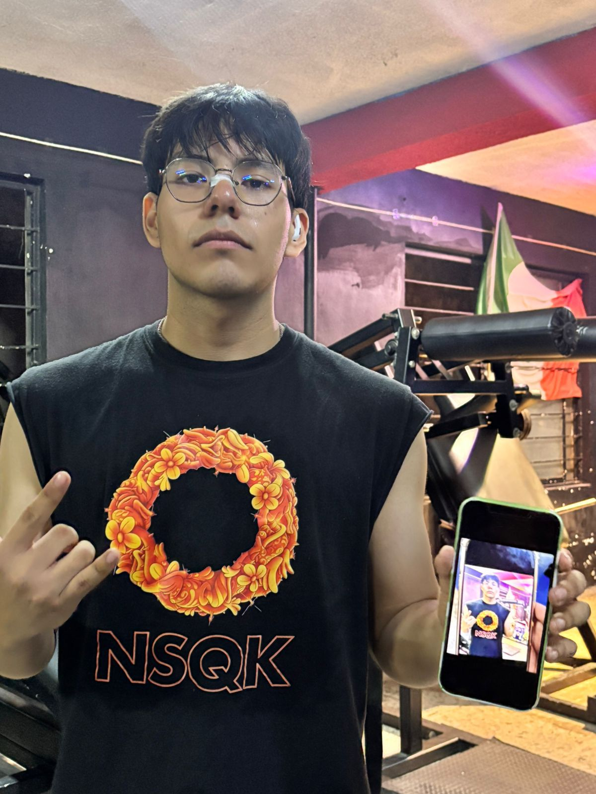
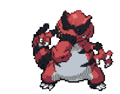

| Altura: | 1.68cm |
|---|---|
| Peso: | 70kg. |
| Género: | Macho |
CHECODEX







Alejandro

Alejandro es proveniente de la región Nuevo León, su especie se registró primeramente como Sergio Alejandro Alcalá Esquivel, pero los grupos sociales de su entorno le han ido modificando el nombre, algunos lo llaman “Alex”, otros le llaman “Sergio” y muy pocos le llaman “Esquivel” (curioso ya que es el identificador que más le gusta), su primera aparición se data del 3 de octubre de 2006 en el municipio San Nicolas de los Garza. Se dice que esta especie es muy pacífica y tranquila, con un carácter amigable, se relaciona fácilmente con otras especies, sobre su aspecto es de tez clara la cual cuenta con un patrón curioso de lunares sobre todo su cuerpo, ojos cafés, cabello lacio y oscuro y ojos ligeramente rasgados. Se conoce que los de su especie suelen tener una fijación por la tecnología, y se adaptan rápidamente a esta.

Mi pasatiempo favorito desde niño ha sido jugar videojuegos, y uno de mis videojueos favoritos desde siempre ha sido pokemon.
A continuación, muestro lo que sería mi equipo perfecto.


Mi experiencia de la carrera
La carrera me ha gustado, los temas me interesan,
me encanta experimentar con lo que voy aprendiendo de programación,
pero las clases de muchos maestros no me convencen, muchos profesores no dan ni apoyo ni clase a el grupo,
ESA VA DIRECTA PARA EL MAESTRO DEFICIENTE WALTER(deficiente en el aspecto de impartir temas) Y DE PASO AL PROFE PERICLES, NO ME DIO MAS DE DOS HORAS CLASE EN TOTAL EN TODO EL SEMESTRE.
(**Extra** Salazar y Juanga bestos profes de la carrera ❤❤❤ y Alejandro va extrañamente bien...)
Mis expectativas sobre la materia
Deseo aprender sobre el desarrollo de páginas y sitios web para poder desarrollar páginas por mi propia cuenta, actualmente no conzco ni una cuarta parte de lo que abarca todo este campo de aprendizaje. Mi atención esta muy centrada actualmente en el diseño de la página, me gustaría explorar y aprender a profundidad sobre ese tema. (**ACTUALIZACIÓN**Ese texto lo escribí antes de darle diseño a la página, puedo decir que me siento orgulloso de mi creación.)
Fun-Facts
Siempre me ha gustado grabar contenido, editar y compartirlo.
Por lo tanto, cuento con un canal en Youtube, ya no subo muchos videos, pero pienso regresar...
(si, esto es spam xdddd)
Canal: Serginirey
Descripción: Suscríbete y disfruta de mi contenido ;)
<------- CLick a la imagen para ir al canal.